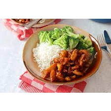

Ingrediënten:
Bereiding:
- Kook de rijst volgens de instructies op de verpakking.
- Snijd de kipfilet in stukjes en bak ze in een pan tot ze gaar zijn.
- Kook of stoom de broccoli tot ze beetgaar zijn.
- Serveer de gebakken kipfilet en gestoomde broccoli met de gekookte rijst.
